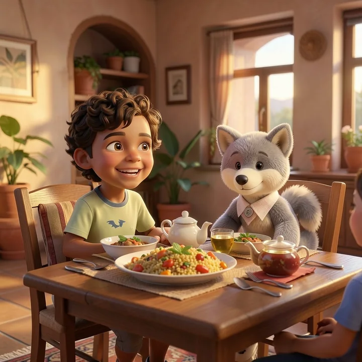
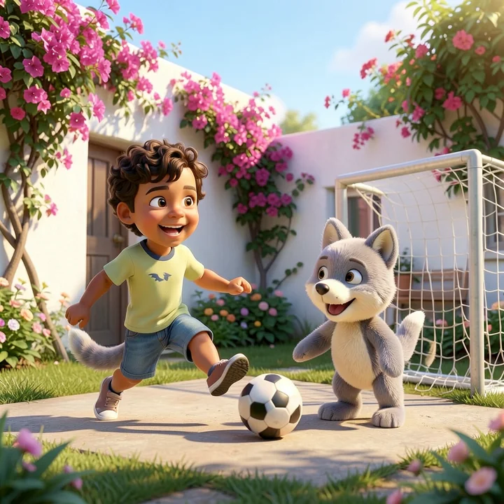
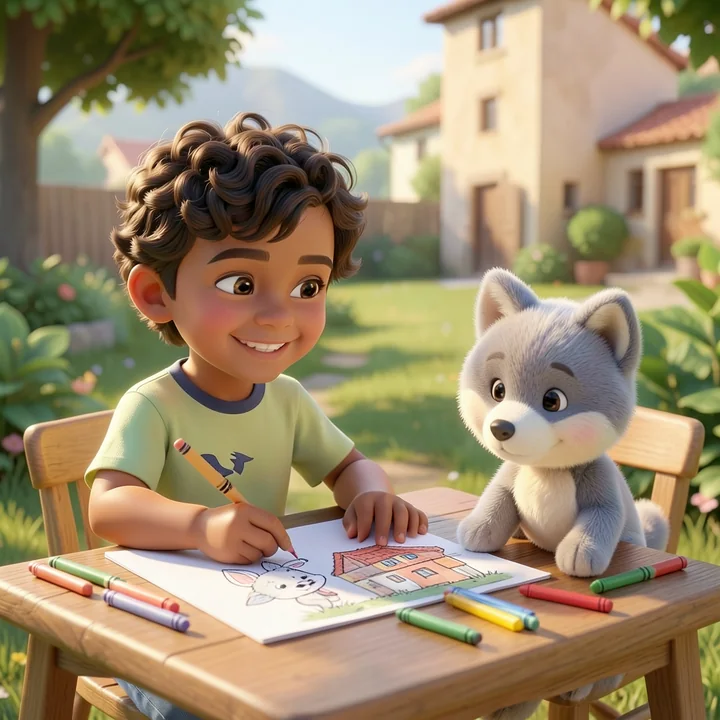

Le week-end de Monsieur Loup chez Amine
Grande section · samedi 14 et dimanche 15 novembre 2026
Ce week-end, Monsieur Loup est venu à la maison ! Il a rencontré toute ma famille : papa Anis, maman Imen, ma grande sœur Essil et ma sœur Salma.
Le matin, on a pris le petit-déjeuner en pyjama avec Salma, et Monsieur Loup était assis sur mes genoux. Ensuite, on s'est installés sur le canapé pour faire des câlins et regarder des histoires sur la tablette.
Après le bain, je l'ai emmené dans ma serviette bleue à capuche. Il s'est assis avec moi à table, et le soir je lui ai fait un dernier gros câlin avant de dormir.
Je l'ai beaucoup aimé : il est tout doux et il ne fait pas peur du tout !
✨ Ce qu'on a imaginé avec Monsieur Loup




Des dessins imaginés à l'ordinateur. Les vraies photos du week-end sont sur l'affiche imprimée pour l'école.